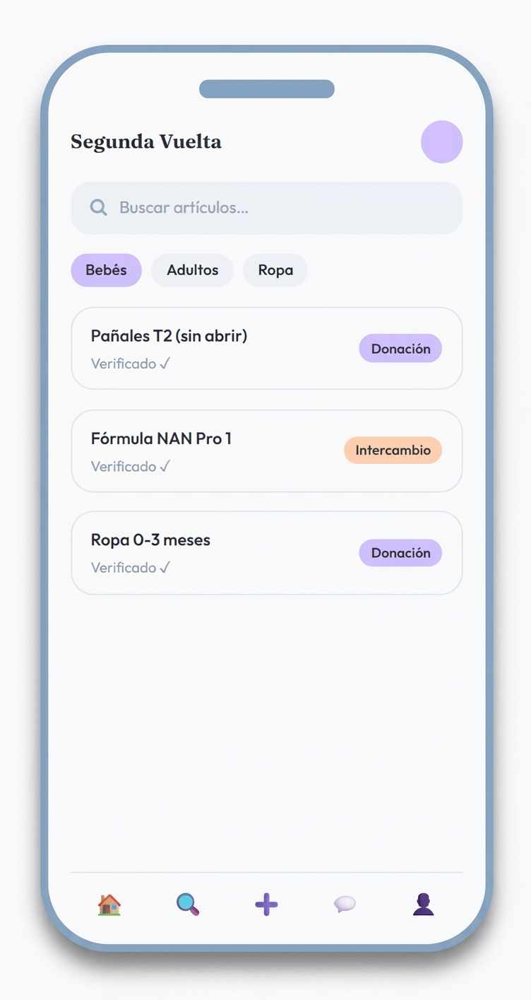
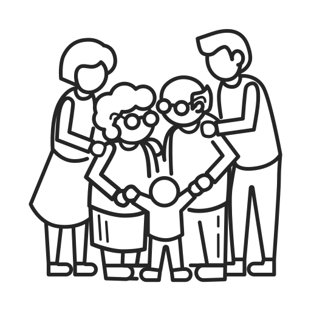

Segunda Vuelta conecta familias para el intercambio y donación de ropa e insumos esenciales para bebés y adultos mayores — promoviendo la dignidad y confianza.

Los bebés crecén rápido y los adultos mayores cambian de necesidades. Esto genera que muchos productos útiles vayan a la basura cuando podrían ayudar a otras familias.
Un bebé puede pasar de talla en pocas semanas. Ropa casi nueva, cajas de pañales sin abrir y fórmula sin consumir quedan sin uso, representando gastos perdidos para la familia.
Cuando un adulto mayor fallece, sus cuidadores se enfrentan a grandes cantidades de pañales y medicamentos que ya no se usarán, generando desperdicio y dolor adicional.
Estos insumos siguen siendo funcionales y costosos. Tirarlos es un gasto doble económico para la familia que los compró.
Segunda Vuelta cierra ese ciclo conectando familias que tienen de más con familias que lo necesitan, promoviendo dignidad.

Los usuarios pasan por un proceso de verificación para garantizar que las publicaciones y los intercambios sean seguros y confiables.
Los insumos como pañales o fórmula se publican con su fecha de caducidad visible, permitiendo a los receptores tomar decisiones informadas.
Segunda Vuelta sugiere lugares públicos y concurridos para los intercambios, priorizando siempre la seguridad de las familias participantes.
Fotografía y sube el artículo que ya no necesitas o busca lo que requieres.
Recibe solicitudes de los productos que publicaste, o envia una sobre uno de tu ínteres.
Encuentra un punto de encuentro seguro y realiza el intercambio/donación, ganando así reputación y confianza.